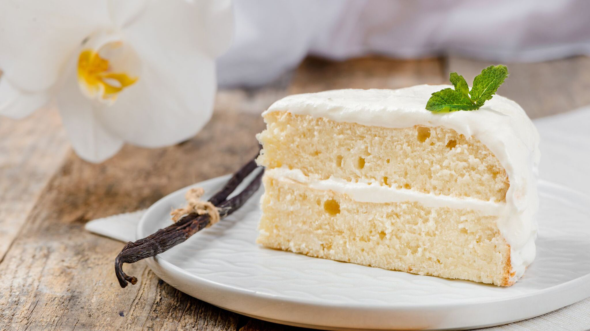

The Perfect Vanilla Cake
By: RecipeTinEats
This is the best vanilla cake recipe. A classic butter cake but with Japanese techniques applied for the most plush, soft and moist yellow cake like you’ve never had before. Plus, this professional bakery style cake stays fresh and moist for 4 days — that’s unheard of!
Ingredients
2 cups all purpose flour
2 1/2 tsp baking powder
1/4 tsp salt
4 large eggs
1 1/2 cups fine sugar
1/2 cup unsalted butter
1 cup milk
3 tsp vanilla extract
3 tsp vegetable oil
Instructions
Preparation
1. Preheat oven to 350°F for 20 minutes before starting the batter.
2. Grease 2 x 8” cake pans with butter, then line with parchment paper.
Combine Dry Ingredients
1. Whisk flour, baking powder and salt in a large bowl. Set aside.
Beat Eggs Until Aerated
1. Beat eggs with a hand whisk.
2. While beating, pour the sugar in slowly
3. Beat until white and tripled in volume.
Finish Cake Batter
1. Heat Milk-Butter: Place butter and milk in a heatproof jug and microwave 2 minutes on high.
2. Gently add flour: When the egg is whipped, slowly begin adding flour, a little at a time. Keep beating.
3. Lighten hot milk with some Egg Batter: Pour hot milk, vanilla and oil into a bowl. Add 1 1/2 cups of the egg mixture into the milk-butter. Use a whisk to mix until smooth.
4. Slowly add milk: Slowly add the milk mixture into the egg mixture while beating.
5. Scrape: Scrape down sides and base of bowl.
Bake
1. Pour batter into pans.
2. Knock out bubbles: Bang each cake pan on the counter 3 times to knock out big bubbles.
3. Bake 30 minutes or until golden.
Cool & Frost
1. Remove from oven. Cool in cake pans for 15 minutes, then gently turn out onto cooling racks.
2. Frost with frosting of choice, or cream and fresh berries or jam.